CLIENT TOOL
タイミー初回受け入れ用
マニュアル作成手順書
スタッフが初日でも迷わないマニュアルを 5ステップ で作成できます。
仕事内容と動画をアップロードし、NotebookLM（ブラウザ版）でPDF化までを案内します。スマホだけで完結します。
1デザイン選択
2仕事内容入力
3動画アップ
4Word保存
5NotebookLM
STEP 01
🎨 マニュアルの見た目を選ぶ
完成形のテンプレートを4種類から選んでください。各カードの「完成サンプル」リンクで実物が見られます。
迷ったら ⭐ おすすめ A を選んでください。
イラスト × 黄色で親しみやすく、ほとんどの現場に合います。
実際の作業写真をマニュアルに反映させたいなら実写（C / D）、印刷して掲示するなら白背景（B / D）を選んでください。
実際の作業写真をマニュアルに反映させたいなら実写（C / D）、印刷して掲示するなら白背景（B / D）を選んでください。
スワイプして他のデザインも見る
STEP 02
📝 仕事内容を入力
スタッフに伝えたい仕事内容を入力してください。Wordファイルにテキストとして埋め込まれます。
STEP 03
🎥 業務動画をアップロード
業務を1カットで撮影した動画をアップロードすると、自動的にスクリーンショットを抽出します。動画なしの場合はスキップしてSTEP 04へ。
📐 業界別 1カット撮影ガイド（参考）
該当業界のカードをクリックすると、推奨アングル・タイムライン・セリフ例が表示されます。1カット撮影の参考にしてください。
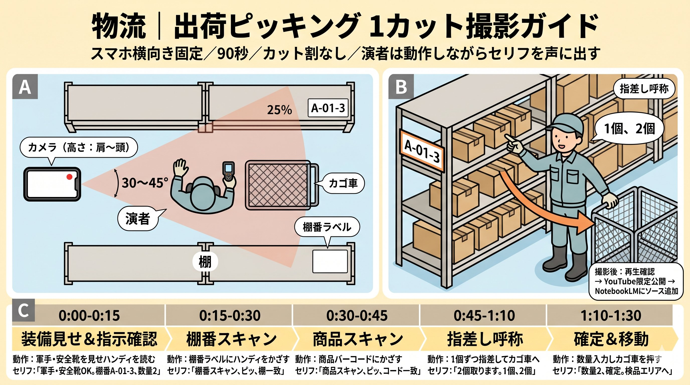
LOGISTICS
物流｜出荷ピッキング
90秒
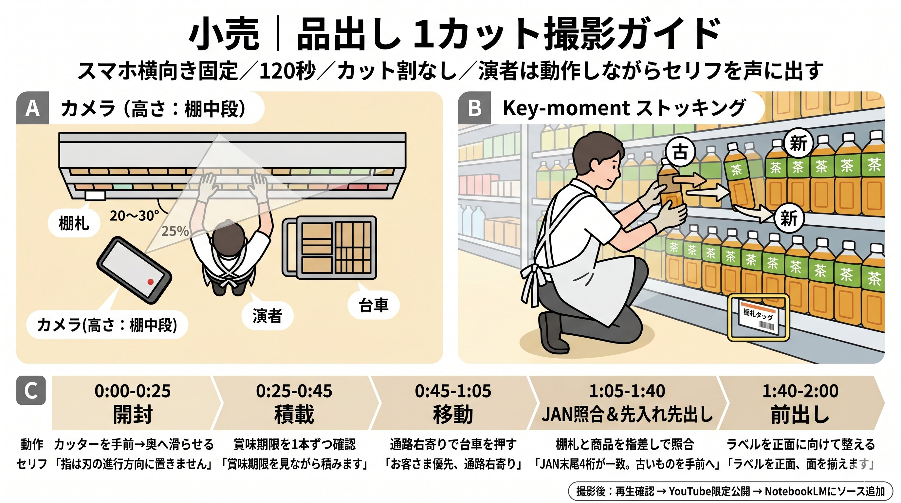
RETAIL
小売｜品出し
120秒
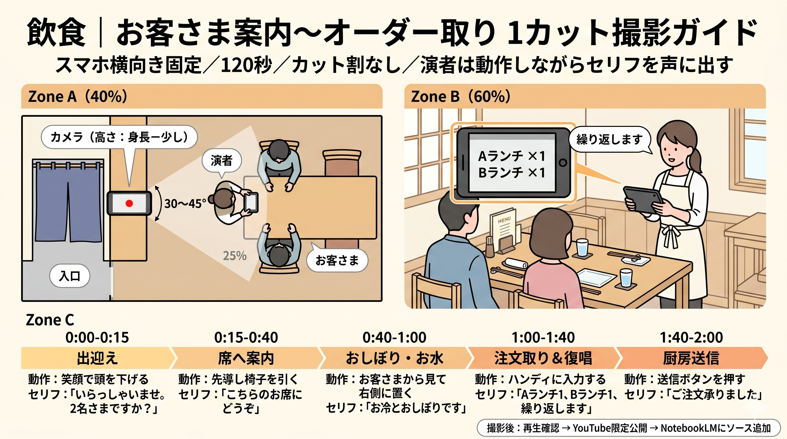
RESTAURANT
飲食｜案内〜オーダー取り
120秒
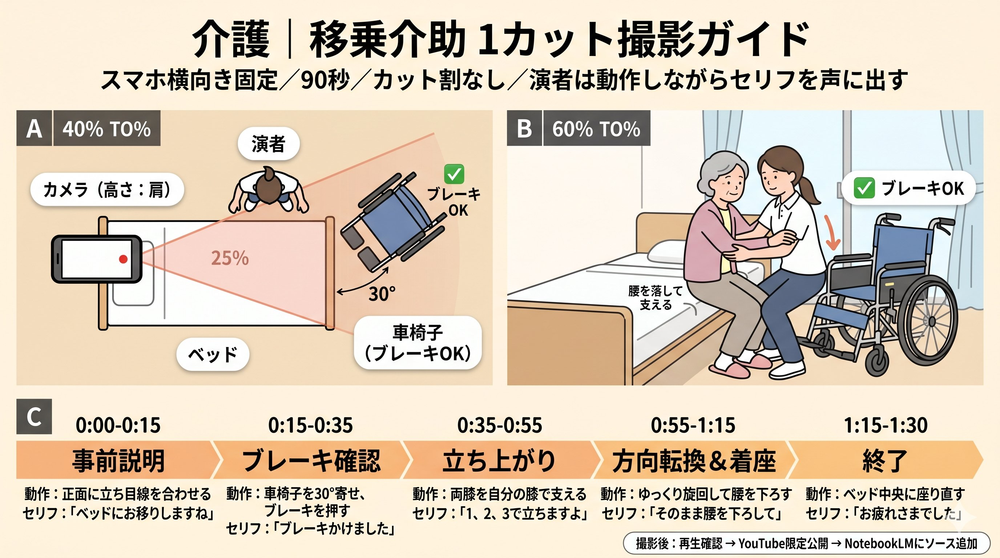
CARE
介護｜移乗介助
90秒

CARE
介護｜食事介助
90秒

MANUFACTURING
製造｜ラベル貼り
60秒

MANUFACTURING
製造｜製品の個包装
90秒
スマートフォンで横向き撮影した動画を推奨（mp4/movなど）
📸 スクショ抽出モード
※動画を解析してシーンチェンジを自動検出します。長い動画ほど時間がかかります。
音声解析ログ
STEP 04
📄 プレビュー＆Wordダウンロード
下のプレビューを確認・編集してください。問題なければWordファイル(.docx)で保存します。
ダウンロード後、STEP 05 が表示されます。
STEP 05
🤖 NotebookLMでマニュアルを完成させる
ダウンロードしたWordをNotebookLMに読み込ませ、選んだデザインでスライドを生成→PDF保存します。
NotebookLMは「ブラウザ（Chrome／Safari等）」で開いてください
NotebookLMアプリからだとPDF保存ができません。
スマホのホーム画面でアプリではなく、ブラウザで
スマホのホーム画面でアプリではなく、ブラウザで
notebooklm.google.com にアクセスしてください。
PHASE 1 — SOURCE
NotebookLMにソースを投入する
- ブラウザでNotebookLMを開く
-
画面上部の + ノートブックを作成 をタップ
操作スクリーンショット — 新規ノート作成後の画面
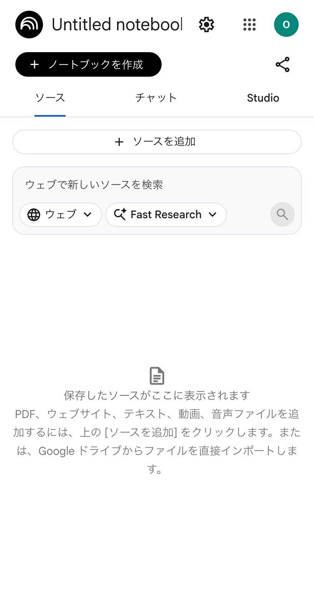
👆1「Untitled notebook」が開く ソース・チャット・Studioの3タブが並ぶ画面が出ればOK。 -
+ ソースを追加 をタップ →「ファイルをアップロード」を選び、先ほどダウンロードしたWordファイル(.docx) をアップロード
操作スクリーンショット — ソース追加モーダル
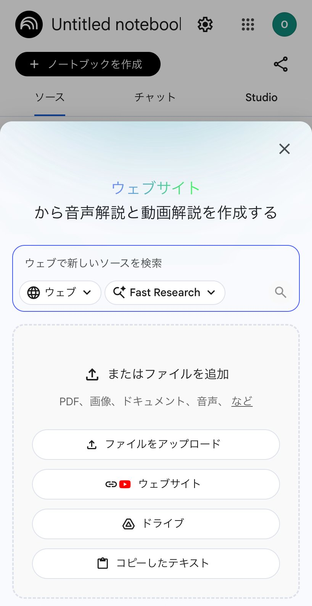
👆2「ファイルをアップロード」をタップして.docxを選択 PDF・画像・音声などにも対応していますが、今回はWordファイルを選びます。 -
ローディングが消えるまで 1分ほど待つ（NotebookLMが内容を読み込みます）
操作スクリーンショット — 読み込み完了の確認
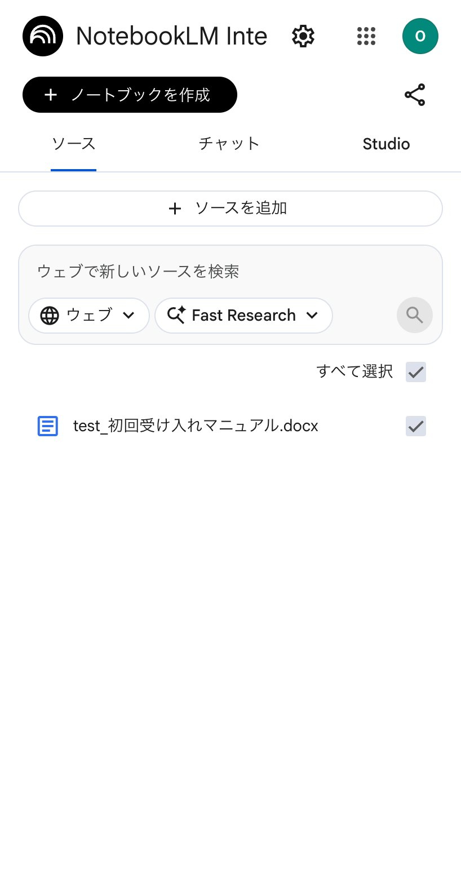
3ソース一覧にWordファイル名が表示されればOK 右側にチェックマーク（✓）が付いた状態で読み込まれます。
PHASE 2 — TEXT
マニュアル本文を生成する
-
画面上部の 「チャット」タブ に切り替え → 下の マニュアルプロンプト をコピーして、チャット欄に貼り付け → 送信
操作スクリーンショット — チャットタブでプロンプト送信
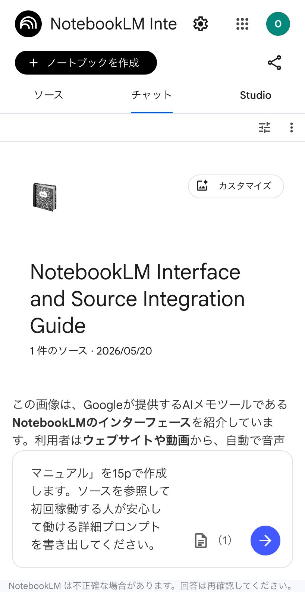
👆1チャット欄にプロンプトを貼り付けて送信 マニュアル本文（15ページ分）がテキストで返ってきます。 -
🪄 MANUAL PROMPTタイミーの「初回稼働用マニュアル」を15pで作成します。ソースを参照して初回稼働する人が安心して働ける詳細プロンプトを書き出してください。解説や挨拶、ツールへの導入文などは一切不要です。『プロンプトの内容そのもの』だけをコピーしやすいように直接出力してください。このプロンプトについての解説も不要です。
-
回答の下にある 📌（ピン）アイコン「メモに保存」 をタップ
操作スクリーンショット — メモに保存
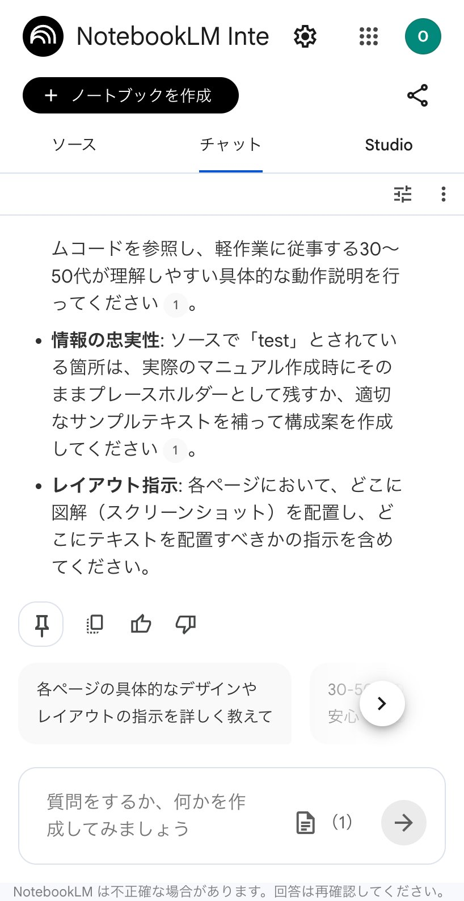
👆2回答の下にある左端の📌をタップ 同じ列にある👍👎ではないので注意。📌は「ピン留め＝メモに保存」の意味です。 -
保存されたメモを開き、右上の ︙（縦三点メニュー） →「ソースに変換」をタップ
操作スクリーンショット — ︙→ ソースに変換
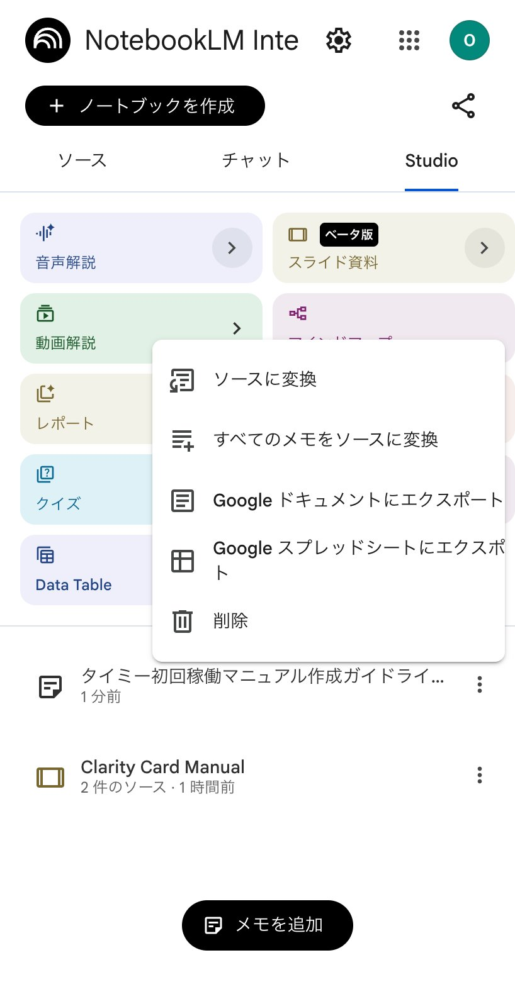
👆3メモ右端の ︙ をタップ →「ソースに変換」 保存したメモがソース一覧に追加されます。 -
ソースタブに戻り、変換したメモと元のWord(.docx)の両方にチェックが入っていることを確認
💡 ポイント 元のWord(.docx)には実際の作業写真が含まれています。両方を選択することで、写真も活用された具体的なマニュアルになります。操作スクリーンショット — ソース一覧でチェック切替👆4両方にチェックが入っていることを確認 💡 元のWord(.docx)には実際の作業写真が入っています。両方ONで写真も活用されます。
PHASE 3 — DESIGN & PDF
デザインを適用してPDF化する — 選択中：A黄色背景 × イラスト
-
画面上部の 「Studio」タブ に切り替え →「スライド資料」をタップ
操作スクリーンショット — Studioタブでスライド資料を選ぶ
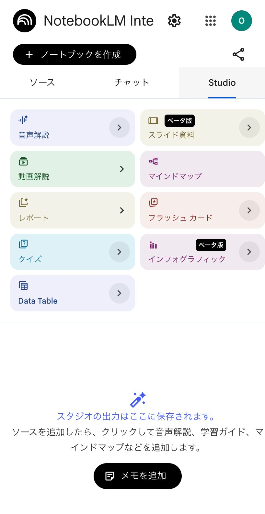
👆1右上の「Studio」タブ → 「スライド資料（ベータ版）」をタップ 音声解説・マインドマップなど他のオプションは無視して、スライド資料を選びます。 -
開いた「スライド資料をカスタマイズ」画面で、下の デザインプロンプト をコピーして、説明欄に貼り付け → 生成 をタップ
操作スクリーンショット — カスタマイズ画面で生成
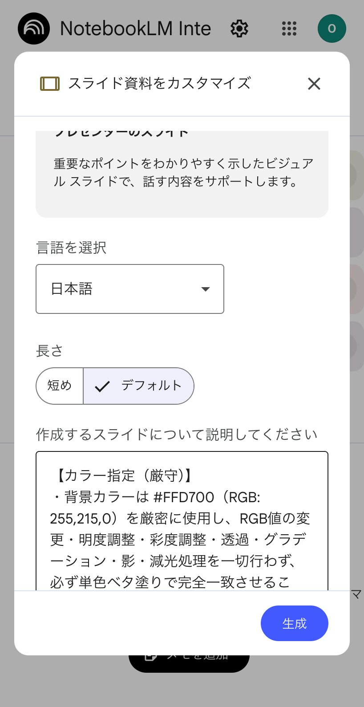
👆2「作成するスライドについて説明してください」欄にデザインプロンプトを貼り付け → 「生成」 言語は「日本語」、長さは「デフォルト」のままでOK。 -
🎨 DESIGN PROMPT — A
-
生成完了後、内容をチェック。修正したい場合は 変更 から まとめて 指示（1スライドずつ修正すると都度時間がかかります）
操作スクリーンショット — 修正指示
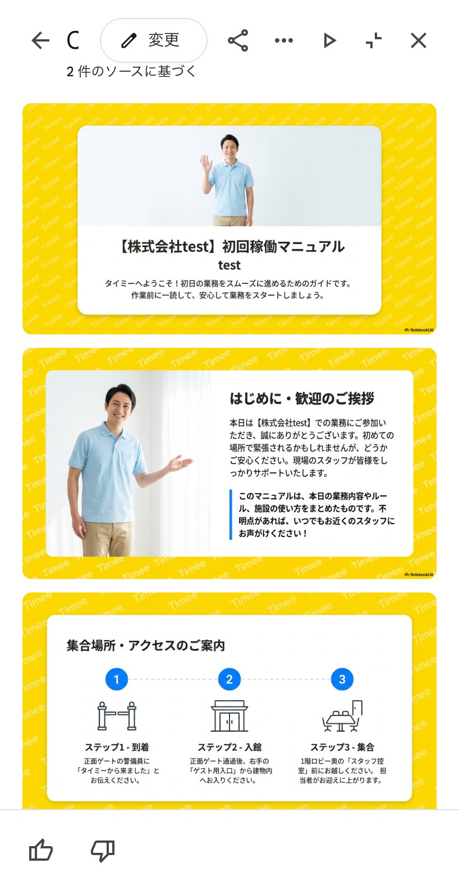
👆3「変更」をタップ → 修正点を1度でまとめて指示 例：「3枚目の画像を差し替え、5枚目を敬語に、7枚目の警告アイコンを大きく」など具体的に。 -
右上の ︙ → 「PDFでダウンロード」 で完成 🎉
操作スクリーンショット — PDFダウンロード（ゴール！）
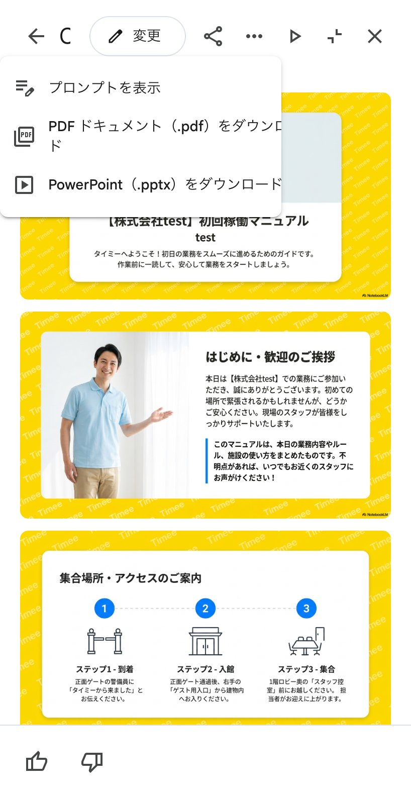
👆4スライド画面の上部 ⋯ →「PDFドキュメント（.pdf）をダウンロード」 ⚠️ アプリだとこのメニューが出ません。必ずブラウザで開いてください。
FAQ
⚠️ よくあるつまずき
マニュアル作成中に詰まりやすいポイントをまとめています。
NotebookLMでPDFダウンロードのボタンが見当たらない
NotebookLMアプリ から開いていませんか？アプリではPDF保存ができません。ブラウザ（Chrome／Safari等） で
notebooklm.google.com にアクセスして同じノートを開くと、PDFダウンロードのメニューが表示されます。「メモに保存」のボタンが見つからない
スマホ画面では 📌（ピン）アイコン として表示されています。回答テキストの下にある左端のアイコンです。👍・👎の絵文字とは別のアイコンなので注意してください。
スライドを生成したら写真が反映されない／質素になった
ソース一覧で 「変換したメモ」と元のWord(.docx)の両方にチェック が入っているか確認してください。元のWord(.docx)には実際の作業時の写真が含まれているので、両方を選択することで写真も活用された具体的なマニュアルが生成されます。
生成されたマニュアルがスカスカ
STEP 02の 仕事内容 が短すぎる可能性があります。「お客様の案内、注文取り…」だけでなく、注意事項・持ち物・装備・身だしなみルールなども含めると精度が上がります。STEP 03で 業務動画 をアップロードするのも効果的です。
黄色背景にならない／意図したデザインにならない
STEP 01のデザインで選んだプロンプトが、NotebookLMの「スライド資料をカスタマイズ」画面に そのまま貼り付けされているか 確認してください。改行や文字が抜けると精度が落ちます。
撮影が難しい現場の場合
動画が撮れない場合は、作業内容をヒアリングしてGoogle Docsにまとめ、それをWordの代わりにNotebookLMへアップロードできます。ヒアリングのまとめ方がわからない場合は、作業マニュアルGem に質問しながら回答するだけでGoogle Docsが作れます。
作業マニュアルGemを開くとログイン画面が出る
⚠️ 一度だけGoogleアカウントでのログインが必要です。初回アクセス時にGoogleアカウントでログインしてください。一度認証すれば、以降は自動的にGemが開きます。
デザインバリエーション、どれを選べばいい？
用途で先に絞る：印刷して掲示するなら白背景（B / D）、スマホ閲覧中心なら黄色（A / C）。さらに迷ったら C（黄色背景×実写） が標準。介護・医療など落ち着いた印象が必要なら D（白背景×実写）。初心者スタッフが多い飲食・小売は A（黄色×イラスト）が好相性です。
プロンプトをクリップボードへ素早く呼び出したい（iPhone・Mac対応）
iPhoneまたはMacの「ショートカット」アプリを使うと、各プロンプトを 2ステップでクリップボードにコピー できます。
📥 初回セットアップ
下記リンクから、使いたいショートカットを追加（リンク先で「ショートカットを追加」をタップ）。一度追加すれば次回以降は不要です。
🚀 使い方（iPhone）
- ホーム画面を下にスワイプして検索を開く
- ショートカット名（例：「マニュアルA」）を入力 → タップ → 自動でクリップボードへコピー
- NotebookLM等で長押し → ペースト
- PROMPTマニュアルプロンプト（NotebookLMのチャットに入れる） ＋ 追加
- DESIGN AマニュアルA（黄色背景・イラスト） ＋ 追加
- DESIGN BマニュアルB（白背景・イラスト） ＋ 追加
- DESIGN CマニュアルC（黄色背景・実写） ＋ 追加
- DESIGN DマニュアルD（白背景・実写） ＋ 追加
※ iPhone・Mac標準の「ショートカット」アプリが必要です（iCloud Shortcuts）。